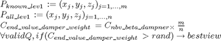

NBV_beta
Description: This function trys an alternate way to find the NBV, it goes through all the poses discretely and looks to see which ones give most innformation, it also tries to find paths to the desired newQs
Contents
Function Call
Inputs: NULL
Returns: NULL
function NBV_beta()
Variables
clear the plots and global bestviews variable
clear global bestviews; %this starts the timer timetaken=clock; global r workspace bestviews optimise scan; %actually will go through first step and then this many more numNBVanglesteps=6; qlimit=r.qlim; %taking 10 deg off either side so we don't use the max range for these joints qlimit(1:3,1)=qlimit(1:3,1)+10*pi/180; qlimit(1:3,2)=qlimit(1:3,2)-10*pi/180; bestviews=[]; indexed_knowncoords=round(setdiff(workspace.knowncoords(GetImpLevInfo(workspace.knowncoords),:),workspace.indexedobsticles,'rows')/workspace.inc_size); %this makes the check for a collision quicker obsticle_points=workspace.indexedobsticles(GetImpLevInfo(workspace.indexedobsticles),:); %%STARTADDED %Additional (unknown info) all_possible=round( workspace.unknowncoords(workspace.lev1unknown ,:)/workspace.inc_size); [nothing,index]=setdiff(all_possible,[indexed_knowncoords;obsticle_points],'rows'); unknown_points=workspace.unknowncoords(workspace.lev1unknown(index),:); %%ENDADDED unknownweight=calunknownweight();
Declare the damper variable

% To compare to rand num, if larger record Q and addinfo as a bestview
end_value_damper_weight=optimise.nbv_beta_dampner*size(indexed_knowncoords,1)/size(workspace.lev1unknown,1);
Go through the joints at discrete positions
for J1=qlimit(1,1):(qlimit(1,2)-qlimit(1,1))/numNBVanglesteps:qlimit(1,2) for J2=qlimit(2,1):(qlimit(2,2)-qlimit(2,1))/numNBVanglesteps:qlimit(2,2) for J3=qlimit(3,1):(qlimit(3,2)-qlimit(3,1))/numNBVanglesteps:qlimit(3,2) %Check collision which also checks soft mostion limit which we can't exceed if ~(J1==scan.done_bestviews_orfailed(:,1)&... J2==scan.done_bestviews_orfailed(:,2)&... J3==scan.done_bestviews_orfailed(:,3)&... inf==scan.done_bestviews_orfailed(:,4)&... inf==scan.done_bestviews_orfailed(:,5)&... inf==scan.done_bestviews_orfailed(:,6)) %%ADDED NEW [obstacle_result,unknown_result]=check_path_for_col([J1,J2,J3,0,0,0],obsticle_points,unknown_points); if obstacle_result if ~unknown_result % display('Failed Joint 4s ellipsoid unknown space test'); continue; end %predefinedJ4's since we don't really need the whole range of movement for J4=[-45,45]*pi/180 %Sets up the limits (possible poses) of J5 %depending on J3 if J3>150*pi/180; J5s_to_go_through=[-60,30]*pi/180; else J5s_to_go_through=[-45,45]*pi/180; end for J5=J5s_to_go_through newQ=[J1,J2,J3,J4,J5,0]; %if we haven't already done this pose before if ~(newQ(1)==scan.done_bestviews_orfailed(:,1)&... newQ(2)==scan.done_bestviews_orfailed(:,2)&... newQ(3)==scan.done_bestviews_orfailed(:,3)&.... newQ(4)==scan.done_bestviews_orfailed(:,4)&... newQ(5)==scan.done_bestviews_orfailed(:,5)) tr=fkine(r,newQ); indexedpnt=round(tr(1:3,4)'/workspace.inc_size); if ~isempty(find(indexedpnt(1)==indexed_knowncoords(:,1) & indexedpnt(2)==indexed_knowncoords(:,2) & indexedpnt(3)==indexed_knowncoords(:,3),1))... &&rand()>end_value_damper_weight if check_path_for_col(newQ,obsticle_points) bestviews(end+1).tr=tr; bestviews(end).chosenview=sum(tr(1:3,1:3)); bestviews(end).scanorigin=indexedpnt*workspace.inc_size; bestviews(end).Q=newQ; bestviews(end).expectedaddinfo=nbv_volume(tr,newQ); bestviews(end).addinfo=getweighted_addinfo(bestviews(end).expectedaddinfo)/unknownweight; else % add to list of impossible scans scan.done_bestviews_orfailed=[scan.done_bestviews_orfailed;newQ]; end end end end end else %add this to the list of places we can't get to scan.done_bestviews_orfailed=[scan.done_bestviews_orfailed;[J1,J2,J3,inf,inf,inf]]; end end end end end
Check if any bestviews were found, if so order them
if isempty(bestviews) error('There were no bestviews found, probably because there are no known points to go too, or end_value_damper_weight is too high'); end %order the best views order_bestviews()
try and get at least 1 path then save the remaing valid_max-1
valid_count=0; % this limits the amount of time we can spend searching for a path when % there may not be one valid_max=min(2*optimise.valid_max,size(bestviews,2)); for current_view=1:valid_max if valid_count<1 % [bestviews(current_view).valid,bestviews(current_view).all_steps]=pathplanner(bestviews(current_view).Q,false,true,true,30); [bestviews(current_view).valid,bestviews(current_view).all_steps]=pathplanner_new(bestviews(current_view).Q,false,true,true,30); else %once we have one path then we just fill the rest in with blanks bestviews(current_view).valid=-1; bestviews(current_view).all_steps=[]; end if bestviews(current_view).valid || valid_count>=1 valid_count=valid_count+1; tempbestviews(valid_count)=bestviews(current_view); %we have enough (optimise.valid_max) if valid_count>=optimise.valid_max break; end else %it failed so note down that we can't get to this destination scan.done_bestviews_orfailed=[scan.done_bestviews_orfailed;bestviews(current_view).Q]; end end %set to the new sorted and pathplanned tempbestviews if valid_count==0 error('There were no bestviews found, probably because there were no possible paths to any of the desired ones, consider changing end_value_damper_weight'); else bestviews=tempbestviews; end
Display Results - currently commented
display(strcat('TOTAL Time taken is: ', num2str(etime(clock,timetaken))));